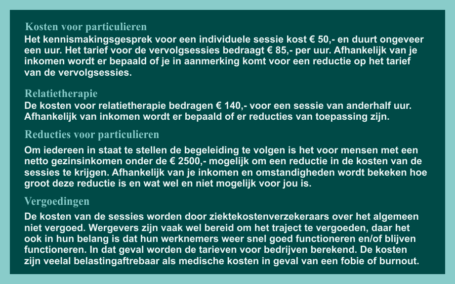

Clienten van de Centrumpraktijk zeggen: De beste hulp die ik me maar kon wensen. Dank je wel voor alle tijd en moeite! Carla - teamleidster Eindelijk iemand die echt weet waar hij het over heeft! Waarom zijn er daar niet meer van? Heel erg bedankt! Je hebt me fantastisch geholpen! Irene - hr manager Het was fijn om met je te praten over de dingen die me al zolang dwars zaten. Dank je wel voor je begrip en steun. Je hebt me belangrijke lessen geleerd over mijn evenwicht en grenzen, die ervoor zorgen dat ik het leven weer aan kan. Sjoukje - projectcoordinatrice Duidelijke stappen, afgerond traject, professionele begeleiding. Prima hulp! Sander - systeembeheerder Eindelijk kan ik weer doen en laten wat ik wil. Wat is het leven een stuk gemakkelijker geworden door de sessies. Arnoud - helpdesk medewerker
